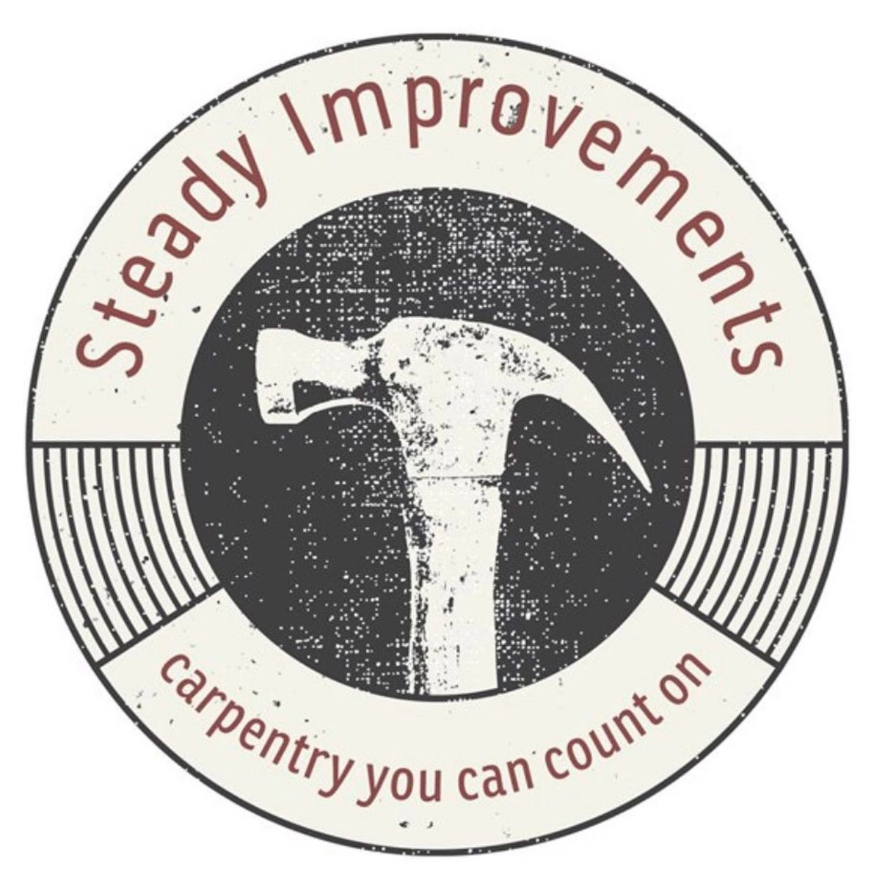

04 Photos
Real jobs only
Every photo is a real Steady Improvements job. No stock photos. Finished rooms first, in-progress shots to show the work behind the walls.


Steady Improvements
One page that keeps the brand looking the same everywhere: website, trucks, shirts, quotes and social.
See it on the website01 Logo
Hand-painted brush lettering, the kind you'd see on the side of a trade van. A claw hammer stands in as the T. "Improvements" sits under it in bold block letters on a full-width brick-red bar, with the line "Carpentry you can count on" beneath. The y of Steady falls in front of the bar.

Where it came fromThe previous round badge. The new mark keeps what mattered, the hammer, the cream, charcoal and brick red, and drops the stock artwork and the circle so it stays sharp at any size.
02 Colour
03 Type
Steady
Yellowtail. Never used for headlines or body text.
Built properly.
Big Shoulders Display, heaviest weight, all capitals.
Clear quotes, tidy sites and solid work, every time.
Work Sans, regular and semi-bold. Labels use Oswald in capitals.
04 Photos
Every photo is a real Steady Improvements job. No stock photos. Finished rooms first, in-progress shots to show the work behind the walls.
05 Rules